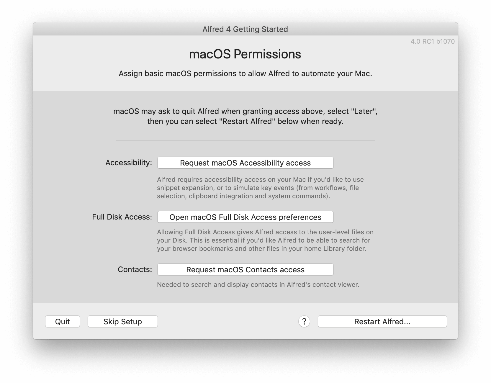
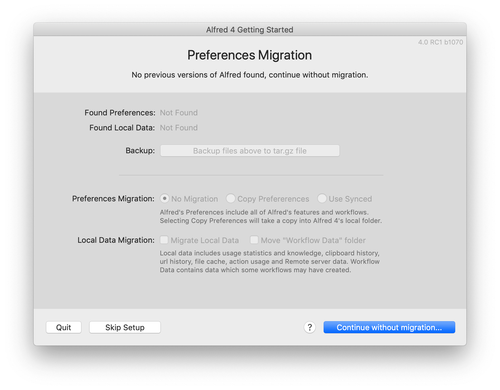

Migrating your Preferences to Alfred 4
Coming from Alfred 2 or 3, and want to get started with Alfred 4? Here's how to smoothly upgrade.
First, if you're a Powerpack user, we recommend upgrading to Alfred 4 first to take advantage of the Powerpack features in Alfred 4! Just make sure you have your old license details handy to upgrade.
Alfred's Getting Started Assistant
When you launch Alfred 4 for the first time, you'll see Alfred's Getting Started screen pop up. This is a quick way to get started with the Powerpack, backup and migrate any existing preferences and set the necessary permissions.

1. Activating your Powerpack
If you have a Powerpack license, you can enter your new Alfred 4 license details here and click "Activate Your Powerpack". Click "Buy or Upgrade Powerpack" if you have an older license you need to update.
If you're a Mega Supporter license holder, or you purchased in 2019, follow the "Buy or Upgrade Powerpack" button to get your free upgrade. You'll need to enter your old details, and your new license will be reissued!
Not a Powerpack license holder? Simply click "Continue without Powerpack" to move to the next step.
2. Backing up and Migrating your Preferences
At this point, if Alfred can see preferences from Alfred 3 or 2, you'll be presented with the following screen:
We recommend backing up your Alfred 3 preferences before starting; Click the "Backup files above to tar.gz file".
You can then copy your old preferences to the Alfred 4 folder, or use your previous Alfred 3 synced preferences. It's not essential to migrate your preferences if you prefer to start fresh in Alfred 4.
If Alfred doesn't find any permissions, you'll see a "No previous versions of Alfred found, continue without migration" message. Find out next steps if you're expecting Alfred to find existing preferences.
3. Granting Alfred Permissions
On the next screen, you'll be presented with the permissions Alfred requires.

Clicking each one will pop up macOS System Preferences for the relevant permission, so that you can type your password and grant Alfred access.
You may be prompted to restart Alfred when granting access in System Preferences, but choose "Later", as you can restart Alfred once you've granted all permissions.
Alfred 4 will now launch and you can get started! Take a look at the Guide to what's new in Alfred 4 to start discovering the new features.
Migration Troubleshooting FAQ
I'm expecting Alfred to find my preferences
If the migration options are greyed out when going through the Getting Started steps, Alfred will give a "No previous versions of Alfred found, continue without migration" message.
If you're expecting to see preferences, continue without migration, then manually sync your preferences from Alfred's Advanced preferences.

Can I use Alfred 3 and Alfred 4 concurrently?
We don't recommend running both versions concurrently, as many hotkeys are the same between the two versions, and this may result in unpredictable behaviour.
You can keep Alfred 3 installed on your Mac and quit Alfred 4 first if you need to relaunch it, but it's unlikely you'll need to go back once you've discovered Alfred 4!
What should I do with Alfred 3 when I'm done with it?
Once you've migrated your preferences to Alfred 4, we recommend deleting Alfred 3 manually.
We advise against using "app cleaners" to remove old Alfred versions, as these can be over-zealous and delete essential files for Alfred 4.
If you've lost your Alfred 4 preferences by using an app cleaner, check your Mac's Trash or refer to a backup (Time Machine, Dropbox, etc) to recover your Alfred.alfredpreferences file.
How can I re-run the Migration Assistant?
If you skipped the migration steps, you can re-run the Migration Assistant, but be aware that this may result in overwriting the changes you've made since the last time you used your Alfred 3 preferences.
- Quit Alfred
- In your user directory, navigate to ~/Library/Application Support/Alfred/ (if you see your prefs.json file, you're in the right location)
- Delete the prefs.json file in this folder
- Delete or move the Alfred.alfredpreferences from this folder
- Restart Alfred
The Migration process will start again, and you'll be able to import your preferences from Alfred 3 again.